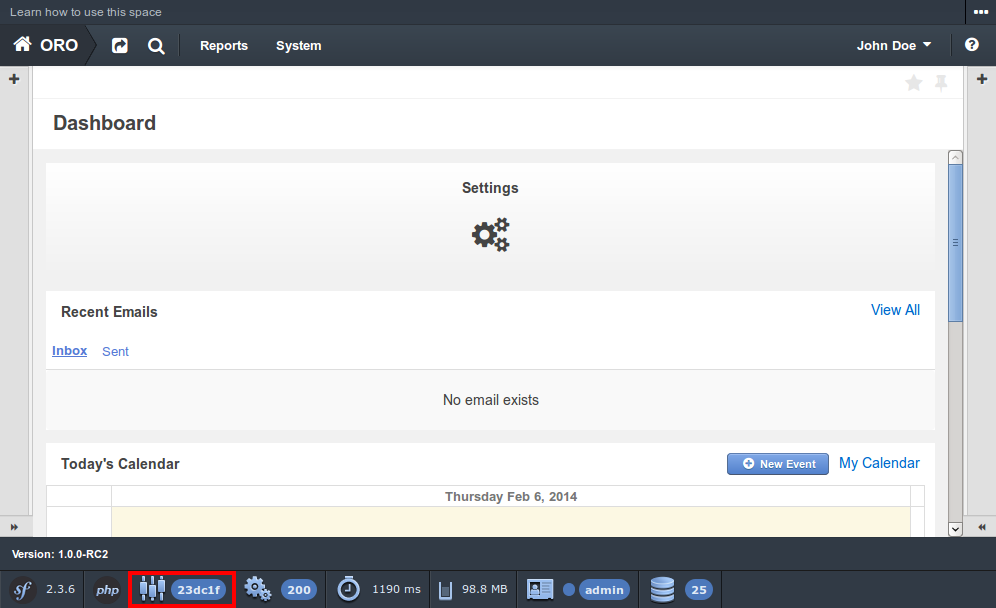
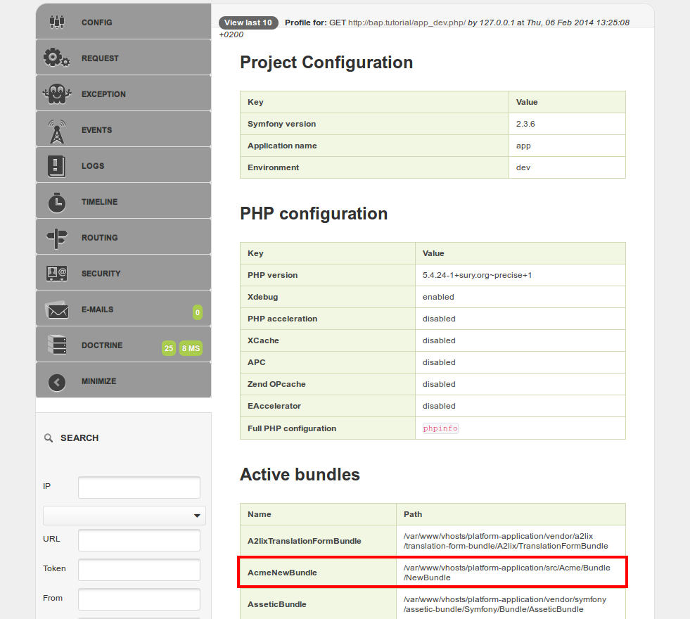

Used application: OroPlatform 1.7
New bundle can be created either manually, or automatically using standard Symfony console command.
First you need to specify name and namespace of your bundle. Symfony framework already has best practices for bundle structure and bundle name and we recommend to follow these practices and use them.
Let’s assume that we want to create the AcmeNewBundle and put it under the namespace Acme\Bundle\NewBundle
in the /src directory. We need to create the corresponding directory structure and the bundle file with the following content:
1 2 3 4 5 6 7 8 9 | <?php
// src/Acme/Bundle/NewBundle/AcmeNewBundle.php
namespace Acme\Bundle\NewBundle;
use Symfony\Component\HttpKernel\Bundle\Bundle;
class AcmeNewBundle extends Bundle
{
}
|
Basically, it’s a regular Symfony bundle. The only difference is in the way it will be enabled (see chapter Enable bundle).
Also new bundle can be generated using Symfony command generate:bundle:
1 2 3 4 5 6 7 8 9 10 11 12 13 14 15 | user@host:/var/www/vhosts/platform-application$ php app/console generate:bundle
Bundle namespace: Acme/Bundle/NewBundle
Bundle name [AcmeNewBundle]:
Target directory [/var/www/vhosts/platform-application/src]:
Configuration format (yml, xml, php, or annotation): yml
Do you want to generate the whole directory structure [no]?
Do you confirm generation [yes]?
Generating the bundle code: OK
Checking that the bundle is autoloaded: OK
Confirm automatic update of your Kernel [yes]? no
Enabling the bundle inside the Kernel: FAILED
Confirm automatic update of the Routing [yes]? no
Importing the bundle routing resource: FAILED
|
It is important that you don’t need to update Kernel and routing, as OroPlatform provides its own way to do that, which will be described in the Enable bundle chapter and in following articles.
Note
Automatic bundle generation is provided by the sensio/generator-bundle package, which is defined in the
require-dev section of the composer.json file in the OroPlatform repository. Therefore, in order to use
automatic generation, please, make sure that this package has been installed (one of the ways to do so is to execute
composer update at the project’s root directory to get all packages from the require-dev section).
Now you have all required files to enable your new bundle. To do that you have to:
create file with name Resources/config/oro/bundles.yml with the following content:
1 2 3 | # src/Acme/Bundle/NewBundle/Resources/config/oro/bundles.yml
bundles:
- Acme\Bundle\NewBundle\AcmeNewBundle
|
This file provides list of bundles to register - all such files will be automatically parsed to load required bundles.
regenerate application cache using console command cache:clear:
1 2 | user@host:/var/www/vhosts/platform-application$ php app/console cache:clear
Clearing the cache for the dev environment with debug true
|
Note
If you are working in production environment you have to add parameter –env=prod.
Now you can go to frontend in development mode (use the link http://<oro-application-base-url>/app_dev.php/) and click on Symfony profiler config icon:
Here you can find your new bundle in the list of active bundles:
That’s all - your bundle is registered and active!